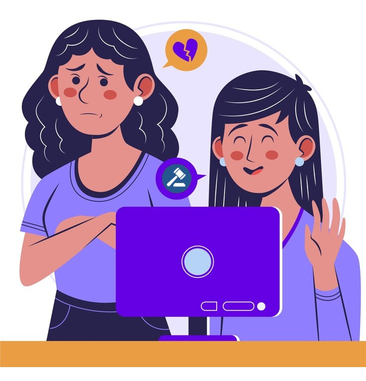

La conexión entre la violencia en el noviazgo y la legislación laboral
Parece un poco desconectado al principio, ¿verdad? Pero hay una conexión entre ambas. La violencia en el noviazgo puede tener un impacto significativo en el rendimiento laboral de una persona. Si alguien está en una relación abusiva, puede ser difícil concentrarse en el trabajo o incluso mantener un empleo debido al estrés y la angustia emocional.
Además, la legislación laboral incluye disposiciones reglamentarias para ayudar a las víctimas de violencia doméstica o de pareja. Por ejemplo, la ley 14.893 establece la “Licencia para Mujeres Víctimas de Violencia” destinada a todas las trabajadoras de la administración pública o privada, permitiendo a las personas tomarse tiempo libre del trabajo para así poder buscar ayuda legal, asistir a citas médicas o mudarse a un lugar seguro.
Aunque nuestrxs adolescentes pueden no estar en el mundo laboral todavía, es crucial que estén informados sobre temas como la violencia en el noviazgo. Creemos como institución educativa, ante las leyes de Inclusión sobre de Género y Diversidad, que este tipo de educación puede ayudar a crear una generación de trabajadores que no toleren la violencia en ninguna forma y estén dispuestos a apoyar a colegas que puedan estar enfrentando estas situaciones.